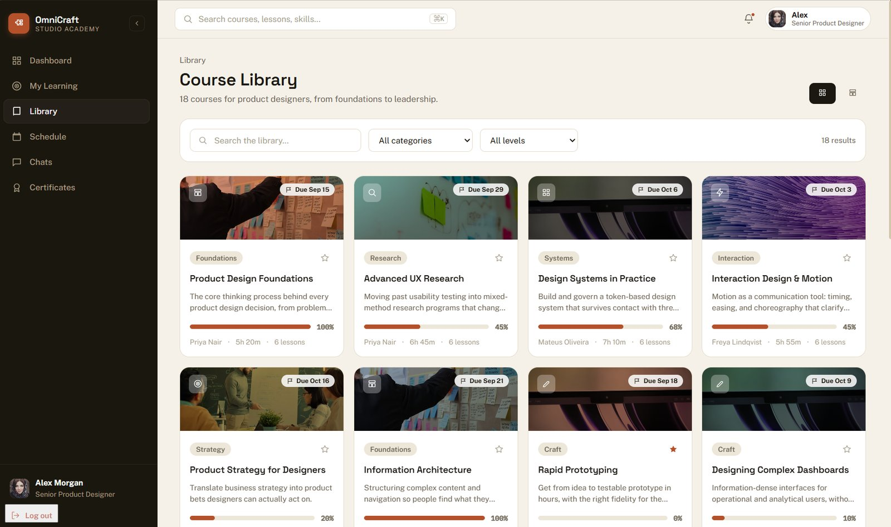
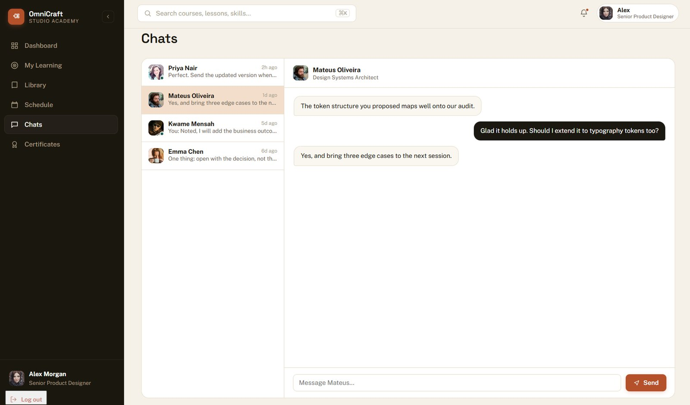
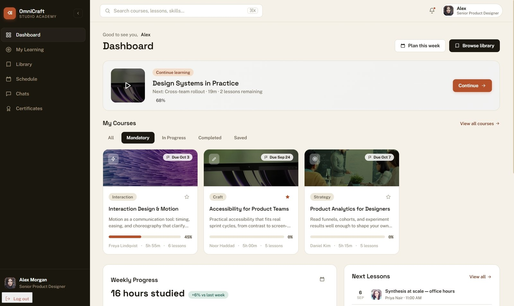
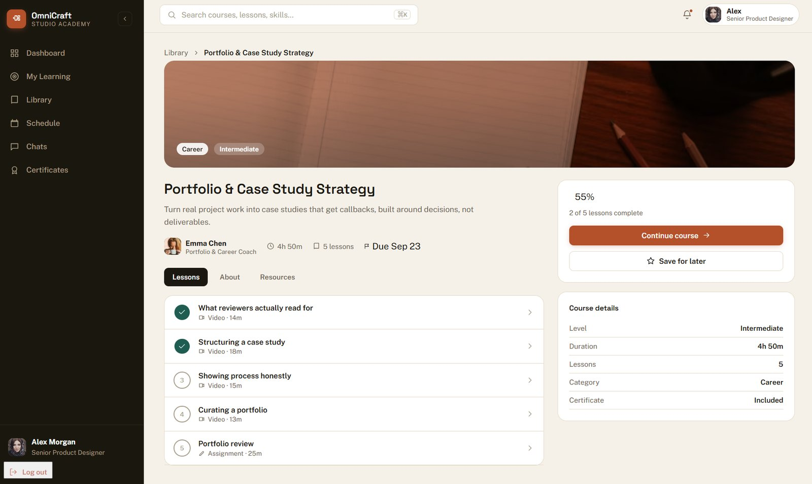

Studio Academy
A learning platform for design engineers and creative technologists who want to build at the intersection of design and code, formalizing what two decades of shipping real products actually teaches, structured into courses, mentorship, and a schedule people follow instead of abandon.

Most design education stops at the interface. It teaches Figma, it teaches heuristics, it teaches a portfolio template, and it stops exactly where the real job gets hard: shipping the thing, talking to the business about why it matters, and knowing enough of the stack to not be blocked waiting on someone else. Design engineers, the people actually expected to move between brand, interface, and code, are left assembling their own education from scattered YouTube videos and abandoned Udemy courses with no coherent sequence and no accountability to finish them.
The gap isn't content. There's no shortage of design tutorials online. The gap is structure: a sequence, a schedule, a mentor who answers a real question, and a deadline that makes you actually finish the fifth lesson instead of the first three.
I rejected building a video library with a progress bar bolted on, which is what most course platforms actually are underneath the marketing. A progress bar doesn't create accountability, it just measures the absence of it. Scheduling, mentorship, and cohort structure had to be first-class objects in the data model from day one, not features added after the course-hosting core was already built, because bolting structure onto an unstructured product never actually produces structure, it produces a settings page nobody uses.
The curriculum itself follows the same shape as my own path: foundations, then research and systems thinking, then craft and interaction, then strategy, then the parts most design programs skip entirely, accessibility as a practical constraint, product analytics literacy, and portfolio and case study strategy built around decisions instead of deliverables. Eighteen courses, deliberately sequenced from foundations to leadership rather than presented as an unordered catalogue to browse.


Dashboard
Leads with the course you're mid-way through, not a grid of everything, so the next action is always obvious.
Course library
18 courses across foundations, research, systems, interaction, strategy, and craft, filterable by category and level.
Course detail
Lesson list, completion state, and course details together, so a learner never has to guess what's left or how long it takes.
Mentor chat
Direct threads with named mentors, not a generic support inbox, so feedback ties to a real person and a real decision.
Weekly progress
Hours studied and week-over-week change, surfaced on the dashboard itself, not buried in a separate analytics tab.
Certificates
Issued on course completion, tied to the actual lesson record rather than a self-reported checkbox.

The learner this is built for already has a job title, senior product designer, design systems architect, product designer, people with real production experience who are filling in the specific gaps a bootcamp or a self-taught path left behind, not someone starting from zero. That's why the sample learner profile carries mandatory, deadline-bound courses rather than an open buffet: "Interaction Design & Motion," "Accessibility for Product Teams," and "Product Analytics for Designers" all show real due dates, because a working professional's learning has to compete with their actual job for attention, and a due date is what makes it win often enough to matter.
Mentorship is built around named specialists rather than a generic help desk: a portfolio and career coach, a design systems architect, an accessibility lead, each attached to the specific course they own, so a question about token architecture reaches the person who actually thinks about token architecture for a living.
Built solo, which meant the curriculum had to be genuinely mine to teach, sequenced from what I've actually shipped rather than licensed or aggregated from elsewhere, since a one-person platform can't hide a thin curriculum behind a large content team. The schedule and mentor-chat systems reuse the same underlying data model as the course library, deliberately, so a learner's progress, their weekly hours, and their open conversations with a mentor all stay in sync without three separate systems drifting apart.
Live with a full 18-course library, working schedule and mentorship systems, and certificate issuance tied to real completion records. It's early enough that I won't invent a graduation number that doesn't exist yet, the honest measure right now is that the structure itself works end to end, dashboard through course through mentor conversation through certificate, which is the exact loop a scattered YouTube education can't offer.